Префектура Вакаяма · гора Коя · паломничество
Женская гора Коя: путь паломниц от святилища богини до тропы вокруг запретного монастыря
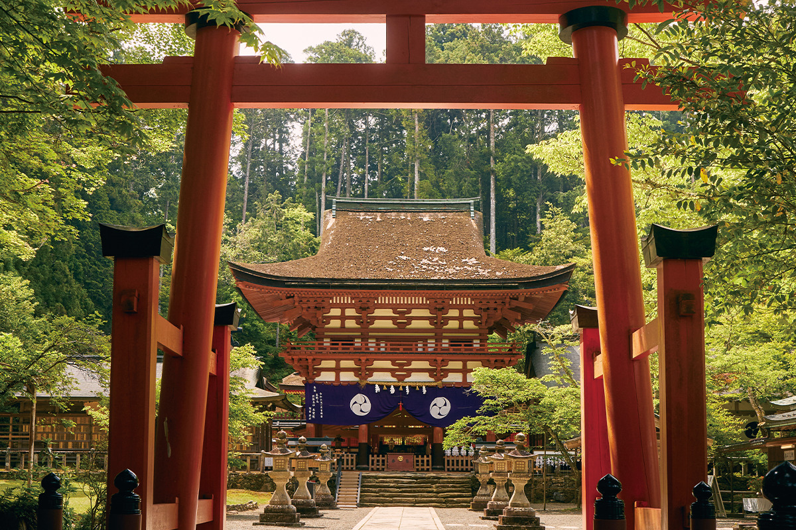
Гора Коя, главный центр эзотерического буддизма в Японии, до начала эпохи Мэйдзи была закрыта для женщин. При этом сама гора, как гласит предание, досталась монахам от богини. По следам паломниц прошлого можно увидеть Коя совсем иначе.
Начало пути
Святилище Ниуцухимэ: богиня, которая одолжила гору
Около 1200 лет назад монах Кукай, известный также как Кобо-дайси (774–835), основал на горе Коя монастырский центр школы Сингон. Сегодня это часть объекта Всемирного наследия «Священные места и паломнические пути в горах Кии», и сюда едут паломники со всего мира. Многие знают, что женщинам вход на гору был запрещён вплоть до начала эпохи Мэйдзи. Гораздо меньше известно, что у самого рождения Коя есть женское начало.
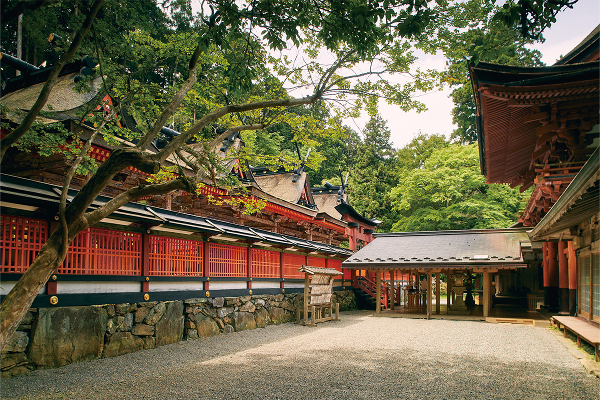
Когда-то гора Коя принадлежала святилищу Ниуцухимэ в долине Амано. Кукай искал место для главного монастыря своей школы и, как гласит предание, получил гору от богини Ниуцухимэ, главного божества святилища, а в 816 году основал там обитель. Выходит, что крупнейшая святыня японского буддизма, где буддизм и синтоизм веками жили вместе, появилась благодаря женщине.
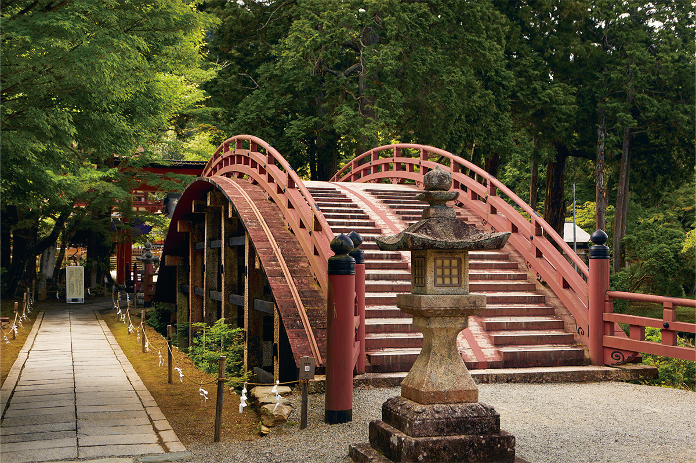
«Но и это не всё. Святилище почитали женщины, оставившие след в истории: императрица Дзингу, Масако Ходзё, Ёдо-доно. Поэтому его называют хранителем женщин»
священник святилища
Масако Ходзё (1157–1225), вдова первого сёгуна Камакуры, после смерти мужа фактически правила страной. Ёдо-доно (около 1569–1615) была наложницей полководца Хидэёси Тоётоми (1537–1598), объединителя Японии, и матерью его наследника. Долину Амано, где стоит святилище, в XX веке воспела писательница Масако Сирасу (1910–1998), знаток старой японской культуры: она назвала её «садом мечты, открывшимся в уголке неба».
Женская Коя
Ниу-кансёбу и Дзисон-ин
Раньше путь на Коя строился так: сначала поклониться в святилище Ниуцухимэ, затем зайти в храм Дзисон-ин, где провела последние годы мать Кукая, и уже из святилища Ниу-кансёбу совершить поклон в сторону горы. Если пройти этой дорогой паломниц прошлого, Коя открывается глубже.
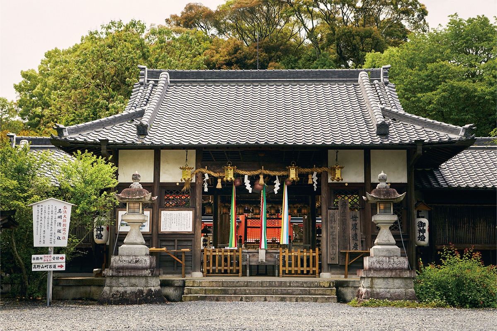
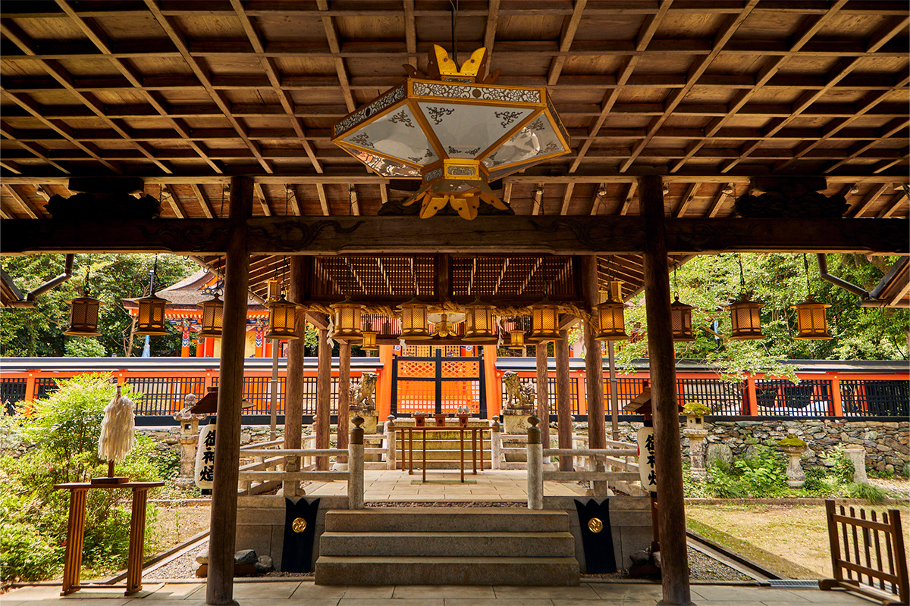
Дзисон-ин называют «Коя для женщин». Храм основали как канцелярию, которая ведала хозяйством строящегося монастыря на горе. Подняться наверх мать Кукая не могла и, по преданию, прожила здесь до конца жизни.
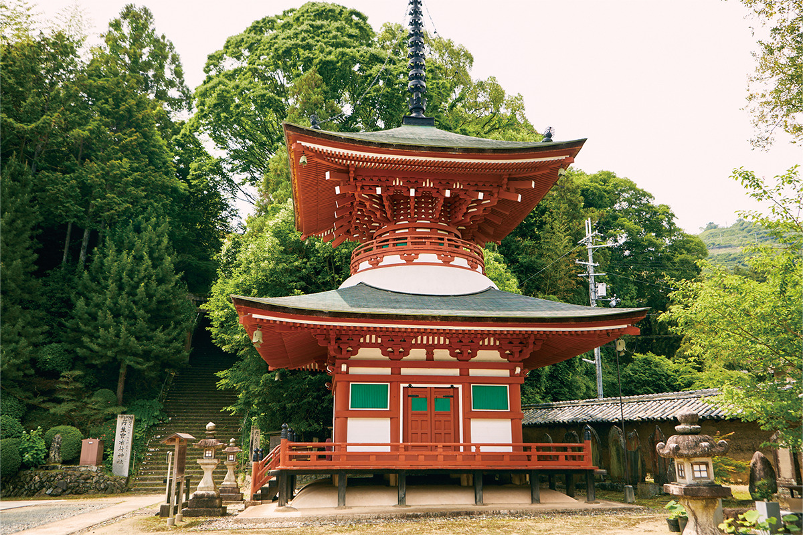
Святилище Ниуцухимэ
- Адрес
- префектура Вакаяма, уезд Ито, Кацураги, Камиамано, 230
- Телефон
- +81 736-26-0102
- Часы работы
- 8:45–16:30 (окно с амулетами)
- Цены / Вход
- бесплатно
- Сайт
- niutsuhime.or.jp
Святилище Ниу-кансёбу
- Адрес
- префектура Вакаяма, уезд Ито, Кудояма, Дзисон-ин, 835
- Телефон
- +81 736-54-2754
- Часы работы
- 9:00–17:00
- Цены / Вход
- бесплатно
Храм Дзисон-ин
- Адрес
- префектура Вакаяма, уезд Ито, Кудояма, Дзисон-ин, 832
- Телефон
- +81 736-54-2214
- Часы работы
- 8:00–17:00
- Цены / Вход
- бесплатно
- Сайт
- jison-in.org
Тропа
Нёнин-мити: дорога вокруг закрытой горы
Монастыри Коя стоят в котловине на вершине, а вокруг неё поднимаются восемь пиков высотой около 1000 метров, которые называют «восемью лепестками». К котловине вели семь дорог, «семь входов Коя», и у каждого входа когда-то стоял павильон для женщин. Дальше паломниц не пускали, и они шли по горным хребтам вокруг святыни.
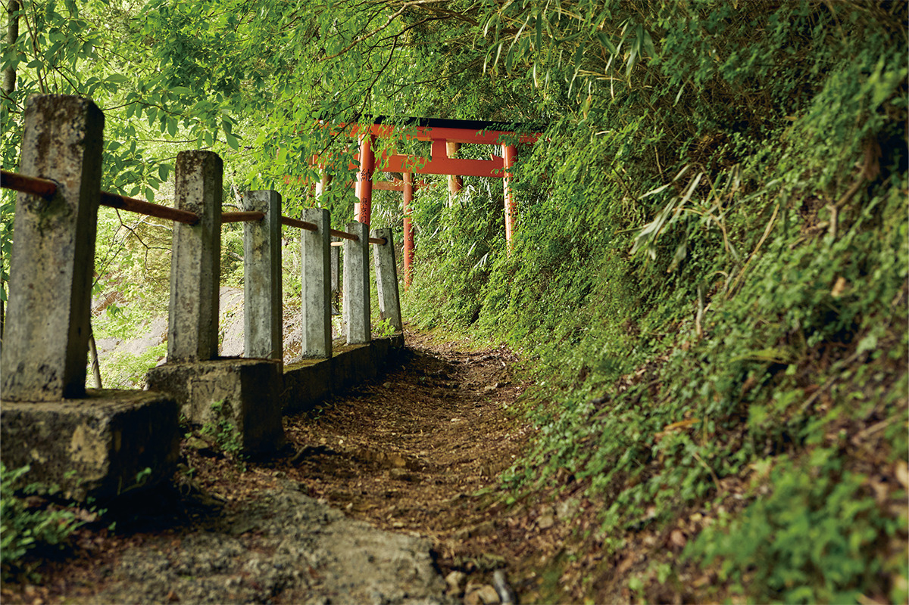
Тропа Нёнин-мити длиной около 10 км проходит через три горы: Мани, Ёрю и Тэндзику. По дороге вокруг растут «шесть деревьев Коя», хвойные породы вроде криптомерии, кипариса хиноки и зонтичной сосны коямаки, и в их тени лес кажется таинственным. Сверху видна пагода Компон-дайто, и монастырь предстаёт с непривычной стороны.
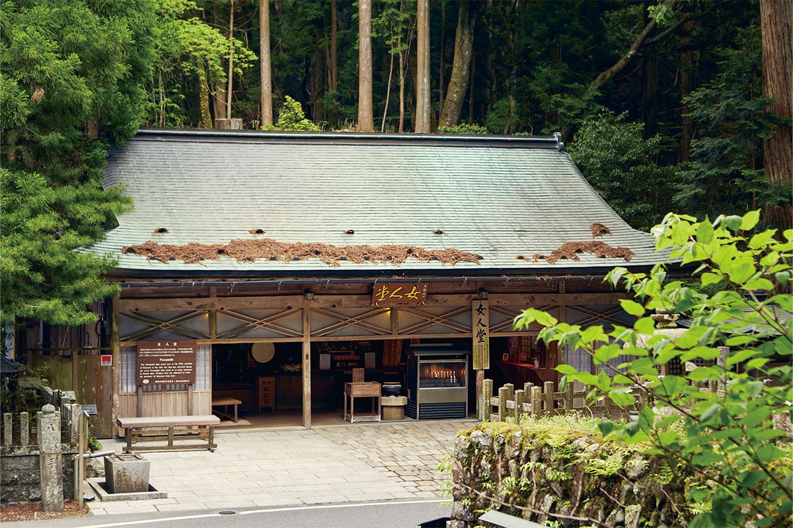
На вершине
Окуно-ин, Конгобу-дзи и Дандзё-гаран
После тропы стоит спуститься в сам монастырский город. Здесь находится Окуно-ин: в его усыпальнице, как верят, Кукай до сих пор пребывает в медитации. Рядом Конгобу-дзи, главный храм школы Коясан-Сингон, и Дандзё-гаран, первый храмовый комплекс, который Кукай устроил на горе.
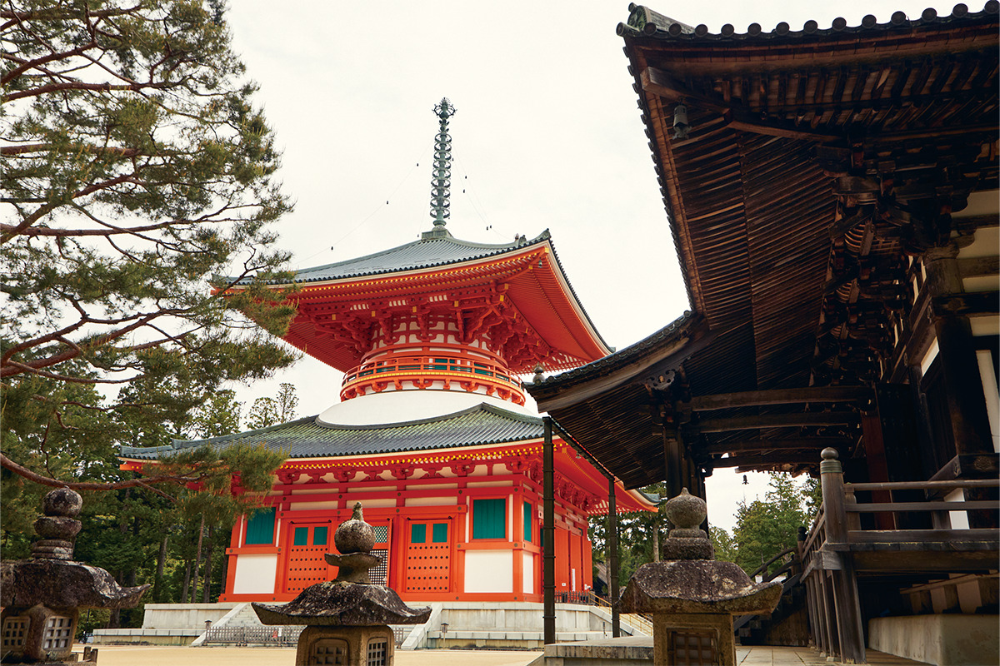
Внутри пагоды стоит объёмная мандала: статуи будд, вокруг которых расписаны колонны. Пока мы её рассматривали, монах Конгобу-дзи объяснил её смысл.
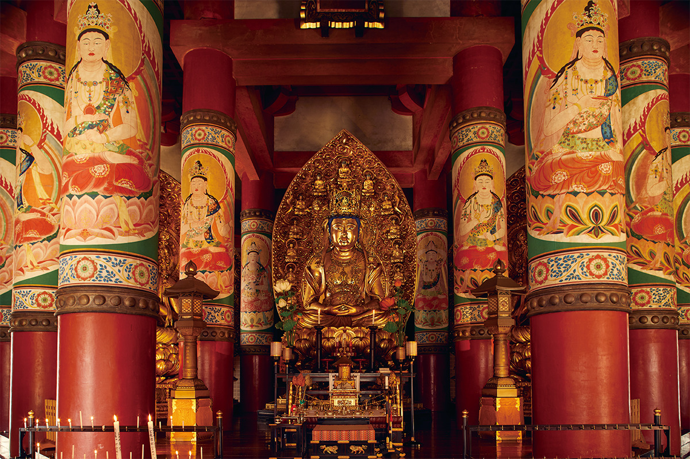
«Объёмная мандала показывает мир эзотерического буддизма, в котором всё принимается и сливается воедино, без деления по школам, полу или народу. Это учение живо и сегодня, и его хочется не объяснять словами, а почувствовать, оказавшись здесь»
монах храма Конгобу-дзи
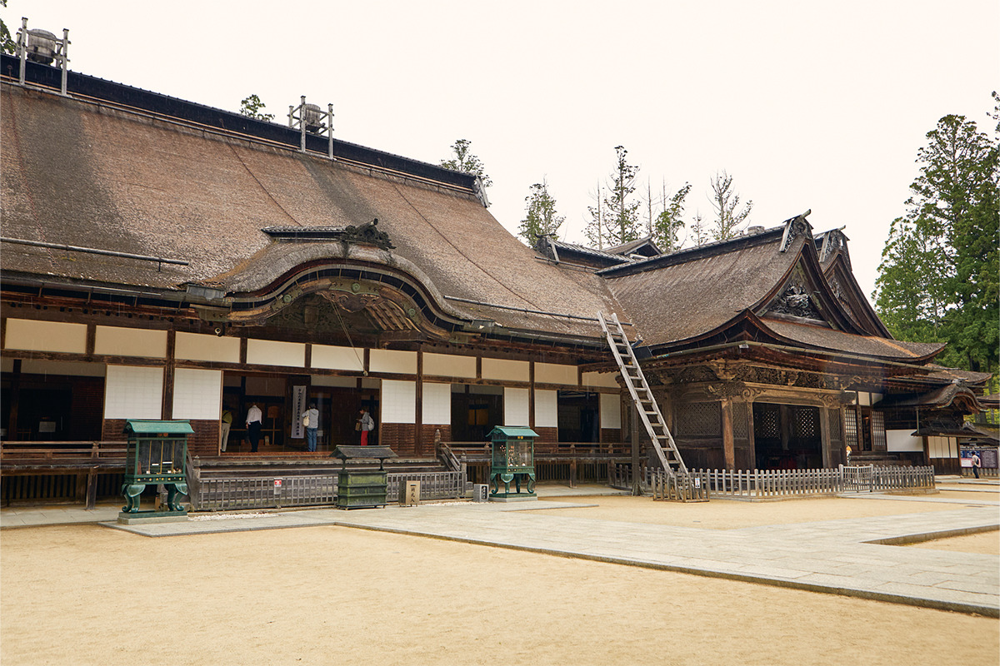
В главном здании Конгобу-дзи часть деталей нарочно оставили незаконченной. Здесь верят, что всё завершённое тут же начинает разрушаться.
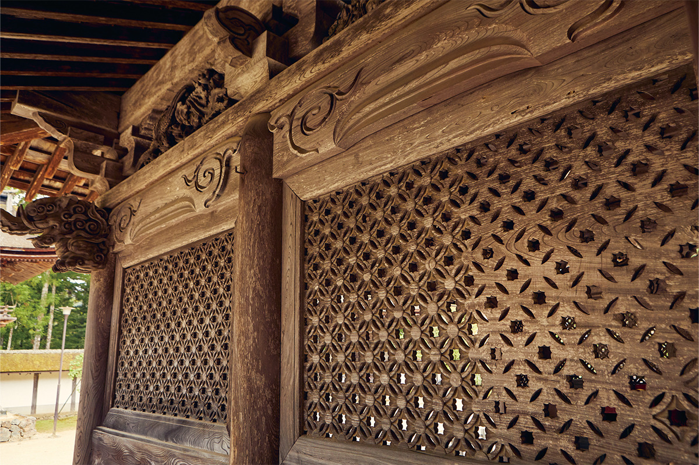
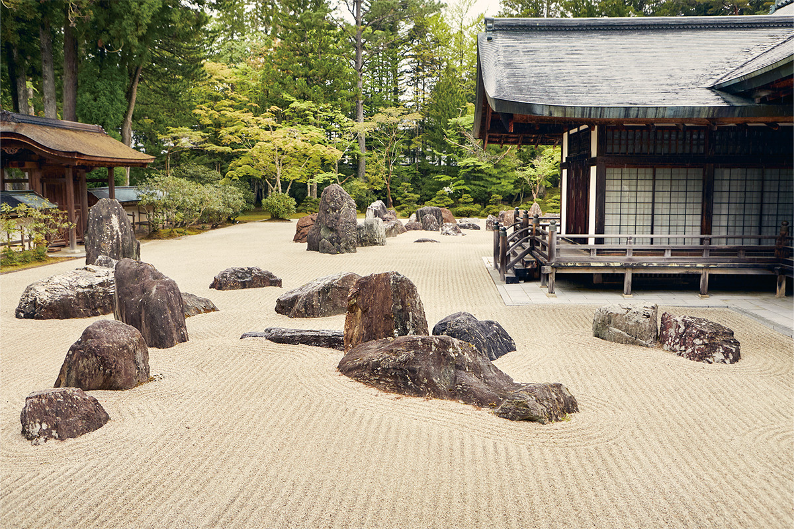
От классического паломничества до пути по следам женщин: на горе Коя каждый раз находится что-то новое, и сюда хочется возвращаться.
Фото: Кэндзи Окадзаки.